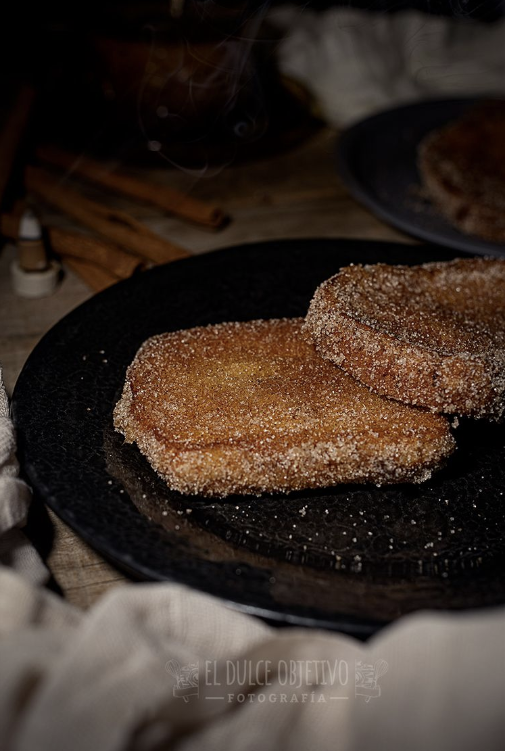

TORRIJAS CLASICAS
Ingredientes:
- 12 rebanadas de pan de unos 2 cm de grosor.
- 500 ml de leche.
- 150 gr de azúcar.
- 50 ml de licor de anís.
- 1 rama de canela.
- Piel de una naranja.
- Piel de un limón.
- 4 huevos talla L.
- Aceite de girasol para freír.
- Azúcar y canela en polvo para rebozar.
Preparación:
- Vamos a comenzar infusionando la leche para que coja todos los aromas.
- Para ello ponemos la leche en un cazo, con el azúcar, la canela, la naranja y el limón, mezclamos y lo llevamos a fuego medio hasta que comience a hervir.
- En ese momento en el que quiere romper a hervir, lo retiramos del fuego, añadimos el licor de anís, lo tapamos y dejamos reposar unos 30 minutos.
- Pasado este tiempo retiramos la canela y las pieles de la naranja y el limón.
- Disponemos todas las rebanadas de pan en una bandeja y con la ayuda de un cazo vamos poniendo la leche sobre ellas, para que empapen bien y las dejamos unos minutos para que absorban todo el líquido.
- En este momento tendremos nuestro aceite caliente y listo para freír.
- Batimos los 4 huevos en un bol o un plato, lo suficientemente grande para que entren nuestras rebanadas de pan.
- Pasamos una a una las rebanadas por el huevo, que queden bien impregnadas y directamente la llevamos a la sartén con el aceite.
- Me gusta tener la temperatura del aceite un poco alta, a unos 220º para que se doren por fuera pero el pan no llegue a absorber mucha cantidad de aceite.
- Cuando estén doradas por un lado damos la vuelta y freímos por el otro del mismo modo.
- Sacamos y las dejamos reposar en una bandeja con papel de cocina absorbente para que quite el exceso de aceite. A mí me gusta ponerles también uno por encima.
- Cuando las tengamos todas fritas, mezclamos una cantidad de azúcar con canela en polvo (al gusto) y rebozamos las torrijas en la mezcla por ambas caras.
